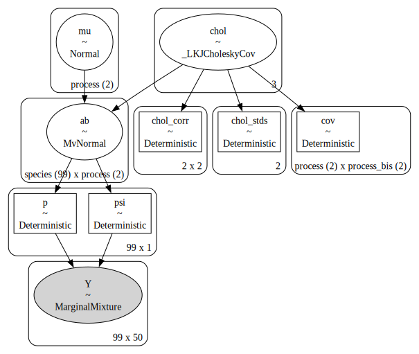
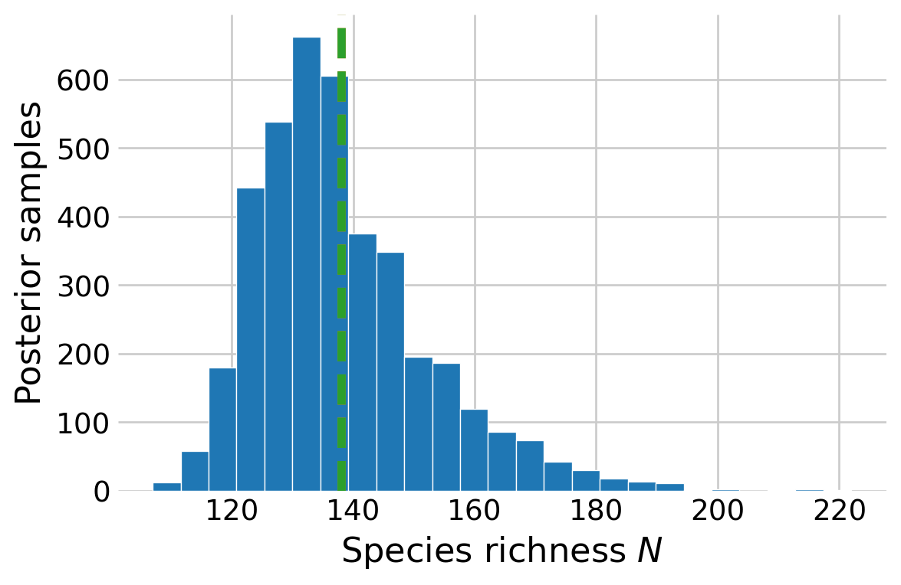

In this notebook, I explore fitting community occupancy models in PyMC. Community occupancy models are a multi-species extension of standard occupancy models. The benefit of these models is that they estimate occupancy and detection better that single species models by treating each species as a random effect. Further, through data augmentation, they can estimate the richness of the supercommunity, that is, the total number of species that use the study area during the surveys.
US Breeding Bird Survey
As a motivating example, I use the breeding bird survey (BBS) data used by Dorazio and Royle (2005) and Royle and Dorazio (2008), Chapter 12. This is a \((n, J)\) matrix with the number of times each species was detected over \(K\) surveys, where \(n\) is the number of detected species and \(J\) is the number surveyed sites. In this example, \(n=99\) species were detected at the \(J=50\) sites over the \(K=11\) surveys in New Hampshire. The BBS occurs on routes across the US. This dataset represents one route.
import numpy as npimport pandas as pdimport pymc as pmimport arviz as azimport pandas as pdimport matplotlib.pyplot as pltfrom matplotlib.patches import PatchSEED =808RNG = np.random.default_rng(SEED)plt.style.use('fivethirtyeight')plt.rcParams['axes.facecolor'] ='white'plt.rcParams['figure.facecolor'] ='white'def invlogit(x):return1/ (1+ np.exp(-x))# read in the detection datanh17 = pd.read_csv('detectionFreq.NH17.csv')Y = nh17.to_numpy()n, J = Y.shapeK = Y.max()# convert the species names to ints species_idx, lookup = nh17.index.factorize() # lookup[int] returns the actual name# plot the detection frequenciesfig, ax = plt.subplots(figsize=(4, 6))im = ax.imshow(Y[np.argsort(Y.sum(axis=1))], aspect='auto')ax.set_ylabel('Species')ax.set_xlabel('Site')# add a legendvalues = np.unique(Y.ravel())[1::2]colors = [ im.cmap(im.norm(value)) for value in values]patches = [ Patch(color=colors[i], label=f'{v}') for i, v inenumerate(values) ]plt.legend(title='Detections', handles=patches, bbox_to_anchor=(1, 1), loc=2, borderaxespad=0.)ax.grid(False)plt.show()
Figure 1: Number of detections for each species at each site along this BBS route.
Dorazio and Royle (2005) draw each species-level effect from a multivariate normal distribution, \[
{\alpha_i \choose \beta_i} \sim \text{Normal} \left( {\mu_{\,\text{detection}} \choose \mu_{\, \text{occupancy}}}, \; \mathbf{\Sigma} \right),
\] where \(\alpha_i\) is the logit-scale probability of detection for species \(i=1,\dots,n\), \(\beta_i\) is the logit-scale probability of occurrence, \(\mu\) is the community-level average, and \(\mathbf{\Sigma}\) is the covariance matrix. We assume that there will be a positive correlation between occupancy and the probability of detection, since abundance is positively correlated with both.
Known \(N\)
First, I fit the the known \(N\) version of the model. The goal of this version is to estimate occurrence and detection for each species, without estimating species richness.
This notebook makes extensive use of the coords feature in PyMC. Coords makes it easier to incorporate the species-level effects via the multivariate normal. I use a \(\text{Normal}(0, 2)\) prior for both \(\mu\) parameters, and a LKJ Cholesky covariance prior for \(\mathbf{\Sigma}.\)
coords = {'process': ['detection', 'occurrence'], 'process_bis': ['detection', 'occurrence'],'species': lookup}with pm.Model(coords=coords) as known:# priors for community-level means for detection and occurrence mu = pm.Normal('mu', 0, 2, dims='process')# prior for covariance matrix for occurrence and detection chol, corr, stds = pm.LKJCholeskyCov("chol", n=2, eta=2.0, sd_dist=pm.Exponential.dist(1.0, shape=2) ) cov = pm.Deterministic("cov", chol.dot(chol.T), dims=("process", "process_bis"))# species-level occurrence and detection probabilities on logit-scale ab = pm.MvNormal("ab", mu, chol=chol, dims=("species", "process"))# probability of detection. newaxis allows for broadcasting a = ab[:, 0][:, np.newaxis] p = pm.Deterministic("p", pm.math.invlogit(a))# probability of detection. newaxis allows for broadcasting b = ab[:, 1][:, np.newaxis] psi = pm.Deterministic("psi", pm.math.invlogit(b))# likelihood pm.ZeroInflatedBinomial('Y', p=p, psi=psi, n=K, observed=Y)pm.model_to_graphviz(known)

Figure 2: Visual representation of the known \(N\) version of the community occupancy model.
with known: known_idata = pm.sample()
Auto-assigning NUTS sampler...
Initializing NUTS using jitter+adapt_diag...
Multiprocess sampling (4 chains in 4 jobs)
NUTS: [mu, chol, ab]
/Users/philtpatton/miniforge3/envs/pymc/lib/python3.11/site-packages/pytensor/compile/function/types.py:970: RuntimeWarning: invalid value encountered in accumulate
self.vm()
Sampling 4 chains for 1_000 tune and 1_000 draw iterations (4_000 + 4_000 draws total) took 43 seconds.
Figure 3: Trace plots for the community level means of occupancy and abundance in the known \(N\) version of the BBS model. The estimates from Royle and Dorazio (2008) are shown by vertical and horizontal lines.
Figure 4: Species-level probabilities of detection and occupancy.
The estimates of the community-level means is quite close to the estimates from Royle and Dorazio (2008). We can visualize the species-level probabilities of detection and occupancy. Compare with Figure 12.3 in Royle and Dorazio (2008).
Unknown \(N\)
Next, I train the unknown \(N\) version of the model. Like many other notebooks in this series, it relies on augmenting the detection histories with all-zero histories. These represent the detection histories for species that may use the study site, but were not detected over the \(K=11\) surveys. I also augment the species names in the coords dict, such that we can still use the dims argument in the multivariate normal. Mirroring Royle and Dorazio (2008), I augment the history \(M - n\) all-zero histories, where \(M=250\) and \(n\) is the number of species detected during the survey.
Similar to the occupancy notebook, I use a CustomDist to model the augmented history. This accounts for the “row-level” zero-inflation, whereby we know that the species is included in the super community if it was detected along the BBS route. The only difference with this logp is that it uses a ZeroInflatedBinomial distribution under the hood, rather than a Bernoulli, and uses the parameter \(\Omega\) to account for the row-level inflation.
M =250all_zero_history = np.zeros((M - n, J))Y_augmented = np.row_stack((Y, all_zero_history))aug_names = [f'aug{i}'for i in np.arange(M - n)]spp_aug = np.concatenate((lookup, aug_names))coords = {'process': ['detection', 'occurrence'], 'process_bis': ['detection', 'occurrence'],'species_aug': spp_aug}def logp(x, psi, n, p, omega): rv = pm.ZeroInflatedBinomial.dist(psi=psi, n=n, p=p) lp = pm.logp(rv, x) lp_sum = lp.sum(axis=1) lp_exp = pm.math.exp(lp_sum) res = pm.math.switch( x.sum(axis=1) >0, lp_exp * omega, lp_exp * omega + (1- omega) )return pm.math.log(res)with pm.Model(coords=coords) as unknown:# priors for inclusion omega = pm.Uniform('omega', 0, 1)# priors for community-level means for detection and occurrence mu = pm.Normal('mu', 0, 2, dims='process')# prior for covariance matrix for occurrence and detection chol, corr, stds = pm.LKJCholeskyCov("chol", n=2, eta=2.0, sd_dist=pm.Exponential.dist(1.0, shape=2) ) cov = pm.Deterministic("cov", chol.dot(chol.T), dims=("process", "process_bis"))# species-level occurrence and detection probabilities on logit-scale ab = pm.MvNormal("ab", mu, chol=chol, dims=("species_aug", "process"))# probability of detection alpha = ab[:, 0] p = pm.Deterministic("p", pm.math.invlogit(alpha))# probability of occurrence beta = ab[:, 1] psi = pm.Deterministic("psi", pm.math.invlogit(beta))# likelihood pm.CustomDist('Y', psi[:, np.newaxis], K, p[:, np.newaxis], omega, logp=logp, observed=Y_augmented )pm.model_to_graphviz(unknown)
Figure 5: Visual representation of the unknown \(N\) version of the BBS model.
with unknown: unknown_idata = pm.sample()
Auto-assigning NUTS sampler...
Initializing NUTS using jitter+adapt_diag...
Multiprocess sampling (4 chains in 4 jobs)
NUTS: [omega, mu, chol, ab]
Sampling 4 chains for 1_000 tune and 1_000 draw iterations (4_000 + 4_000 draws total) took 172 seconds.
The rhat statistic is larger than 1.01 for some parameters. This indicates problems during sampling. See https://arxiv.org/abs/1903.08008 for details
The effective sample size per chain is smaller than 100 for some parameters. A higher number is needed for reliable rhat and ess computation. See https://arxiv.org/abs/1903.08008 for details
Figure 6: Trace plots for the inclusion parameter for the unknown \(N\) version of the BBS model. The estimate from Royle and Dorazio (2008) are shown by vertical and horizontal lines.
I can plot the posterior distribution of species richness \(N.\) This is slightly more complicated than before sinc there is an additional level of zero-inflation (included and never detected or not-included) in this model compared to the occupancy model (present and never detection or not present).
# relevant posterior samplespost = az.extract(unknown_idata)o_samps = post.omega.to_numpy()psi_samps = post.psi.to_numpy()[n:, :]p_samps = post.p.to_numpy()[n:, :]# probability that the animal was never detected during the survey if presentp_not_detected = (1- p_samps) ** K# probability of a zero detection history p_zero_hist = psi_samps * p_not_detected + (1- psi_samps)# probability that the species was included in the given the all-zero historyp_included = (o_samps * p_zero_hist ** J) / (o_samps * p_zero_hist ** J + (1- o_samps))# posterior samples of Nnumber_undetected = RNG.binomial(1, p_included).sum(axis=0)N_samps = n + number_undetected# posterior distribution N_hat_royle =138fig, ax = plt.subplots(figsize=(6, 4))ax.hist(N_samps, edgecolor='white', bins=25)ax.set_xlabel('Species richness $N$')ax.set_ylabel('Posterior samples')ax.axvline(N_hat_royle, linestyle='--', color='C1')ax.axvline(N_samps.mean(), linestyle='--', color='C2')plt.show()

Figure 7: Posterior distribution of species richness from the BBS model.
References
Dorazio, Robert M, and J Andrew Royle. 2005. “Estimating Size and Composition of Biological Communities by Modeling the Occurrence of Species.”Journal of the American Statistical Association 100 (470): 389–98.
Royle, J Andrew, and Robert M Dorazio. 2008. Hierarchical Modeling and Inference in Ecology: The Analysis of Data from Populations, Metapopulations and Communities. Elsevier.